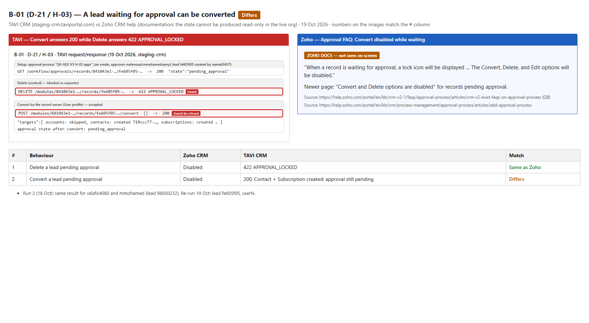
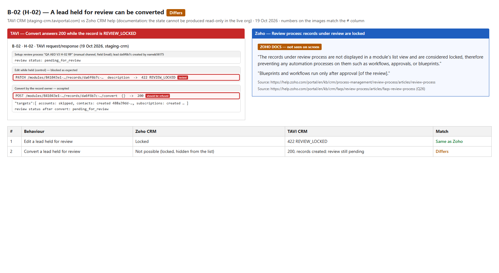
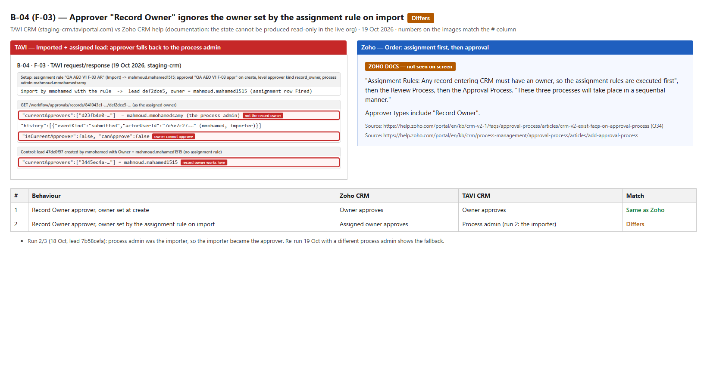
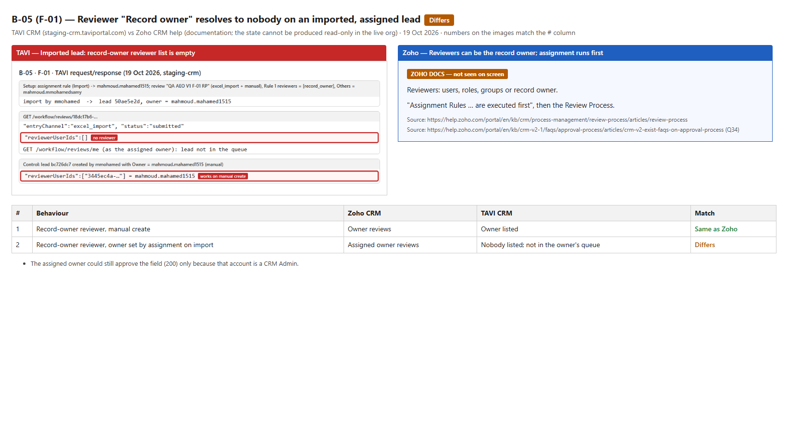
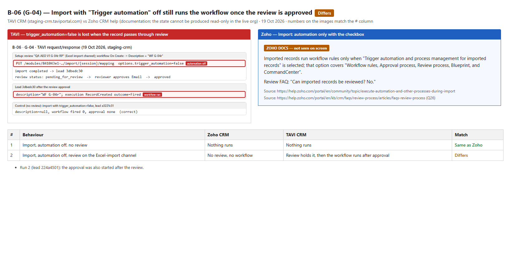
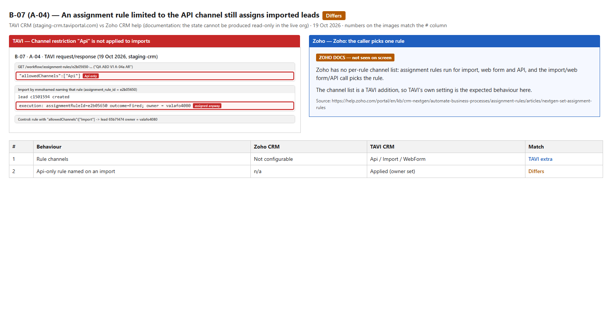
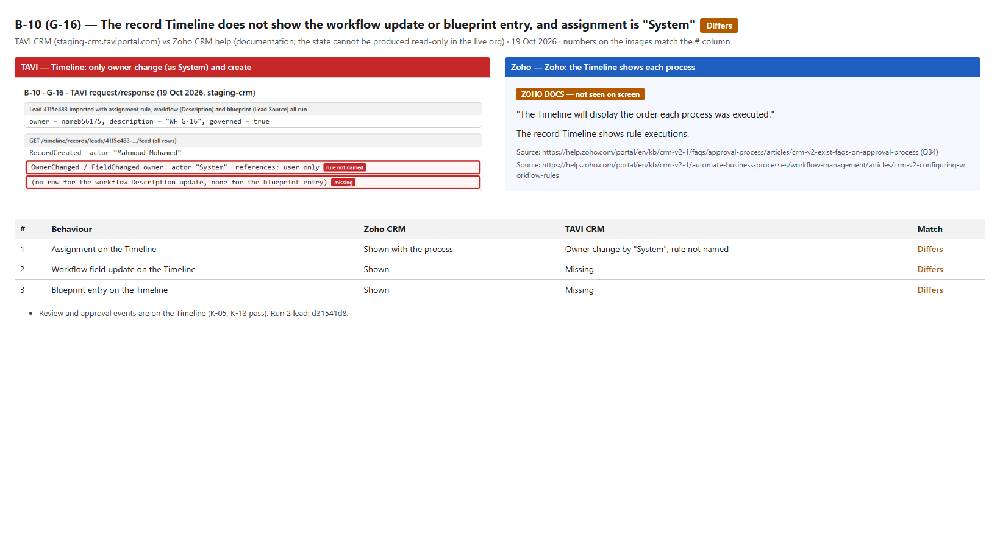
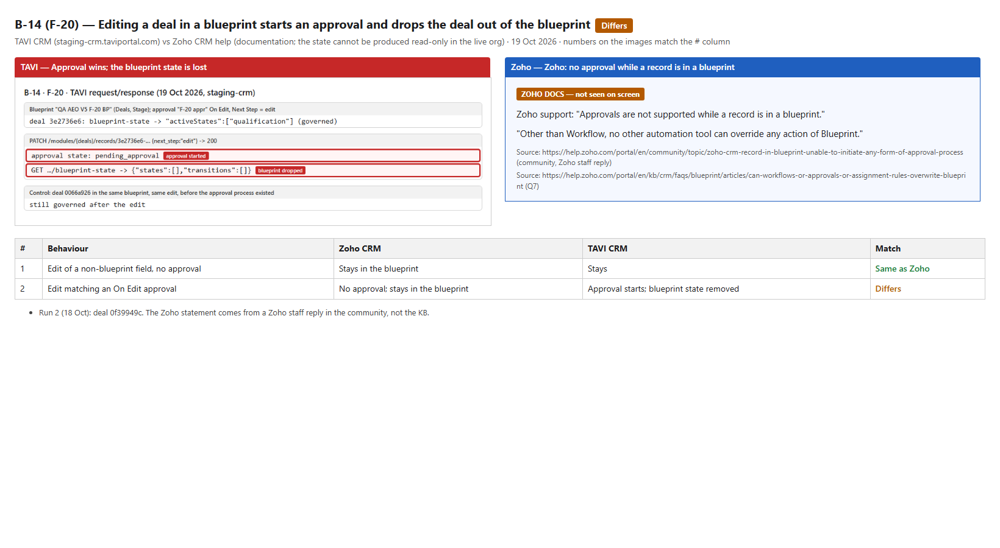
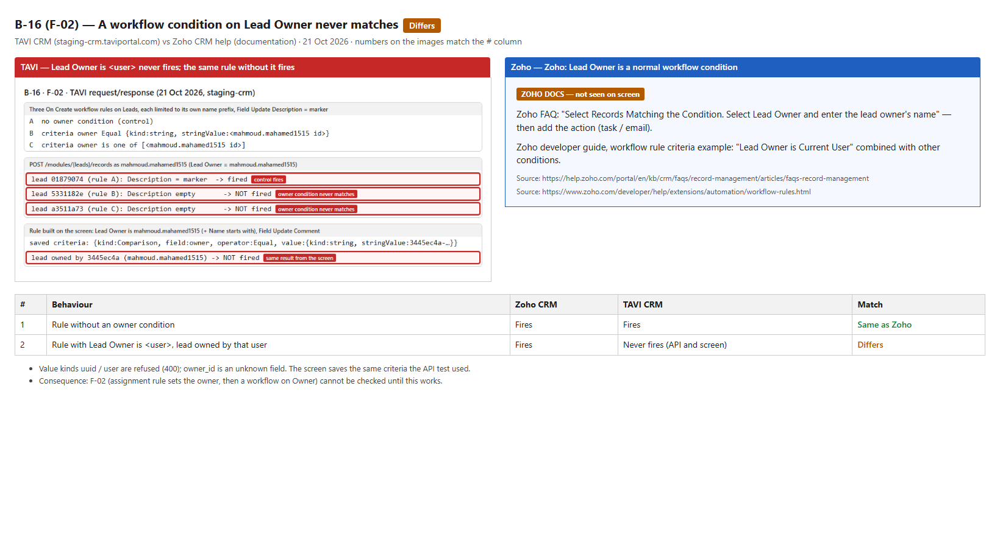

Results of the CRM automation execution-order run (Assignment → Review → Workflow → Approval → Blueprint) on staging, after every candidate bug of 18 Oct was re-run alone on 19 Oct and compared with Zoho CRM. Only confirmed bugs are listed. Published in Plane (19–20 Oct 2026): B-01 (NDC-2296), B-02 (NDC-2297), B-04 (NDC-2308), B-05 (NDC-2309), B-06 (NDC-2302), B-07 (NDC-2298), B-10 (NDC-2321), B-11 (NDC-2322), B-13 (NDC-2323), B-14 (NDC-2334), B-16 (NDC-2391). All confirmed bugs are published.
Host staging-crm.taviportal.com (tenant NDC-Staging)Accounts Owner, CRM Admin ×2, Supervisor, User, "test" profileMethod API (Java + RestAssured), every bug re-run alone with a controlResult 129 passed · 35 failed · 20 inconclusive · 3 not run (18 Oct) → 11 confirmed bugs after re-verification (B-03, B-08, B-12 and B-15 withdrawn, B-09 deferred; B-16 found 21 Oct)
3 high5 medium3 low11 published in Plane15 suspected bugs cleared on re-verification
Confirmed bugs
Each one was reproduced on 19 Oct 2026 in isolation: one process of each type on a fresh restricted QA layout, a control record next to it, results read through the API with explicit 2xx checks. The evidence images show the real request and response on the left and Zoho's documented behaviour on the right. Published in Plane (19–20 Oct 2026): B-01 (NDC-2296), B-02 (NDC-2297), B-04 (NDC-2308), B-05 (NDC-2309), B-06 (NDC-2302), B-07 (NDC-2298), B-10 (NDC-2321), B-11 (NDC-2322), B-13 (NDC-2323), B-14 (NDC-2334), B-16 (NDC-2391). All confirmed bugs are published.
While a lead is pending approval, Delete is correctly refused (422 APPROVAL_LOCKED), but Convert goes through: a Contact and a Subscription are created and the lead stays "pending approval". The approver then approves or rejects a lead that has already been converted.
Steps to reproduce
Settings → Approval Processes → create a process on Leads: trigger On Create, criteria Last Name starts with "B01", approver = a named user (e.g. a CRM Admin).
Log in as a User-profile account and create a lead with Last Name "B01 test". Its approval status becomes Pending approval.
Try to Delete the lead → refused with APPROVAL_LOCKED (correct; this is the control).
Click Convert on the same lead and confirm (API: POST /modules/{leads}/records/{id}/convert with {}).
Open the lead and the new Contact / Subscription; check the lead's approval status.
Expected (Zoho)
Convert is disabled while the record waits for approval, like Delete (Zoho approval FAQ Q9).
Actual (TAVI)
Delete 422 APPROVAL_LOCKED; Convert 200 with Contact + Subscription created. Same for valafo4080 and mmohamed on 18 Oct.
Records
Lead fe605f05 (19 Oct); 96850232, ba3a146a (18 Oct)

B-01: TAVI (left, annotated request/response) vs Zoho CRM documentation (right).
A lead held by a review process is locked for editing (422 REVIEW_LOCKED), yet it can be converted. The review is still pending afterwards, so the reviewer reviews data that already left the lead. The converted lead also could not be deleted afterwards (REVIEW_LOCKED) until the review was rejected by hand.
Steps to reproduce
Settings → Review Process → create a process on Leads: channel Manual, field set Email, rule All records, reviewer = a CRM Admin.
As a User-profile account, create a lead with an Email. Review status becomes Pending for review.
Try to edit any field → refused with REVIEW_LOCKED (correct; this is the control).
Click Convert on the lead and confirm.
Check the review status of the lead, then try to delete the converted lead.
Expected (Zoho)
Records under review are locked and kept out of the list; no conversion until the review is complete (Zoho review process).
Actual (TAVI)
Edit 422 REVIEW_LOCKED; Convert 200, records created, review still pending.
Records
Lead da6f6b7c (19 Oct); 22d5679b (18 Oct)

B-02: TAVI (left, annotated request/response) vs Zoho CRM documentation (right).
Approver "Record Owner" ignores the owner set by the assignment rule on import
An imported lead is assigned by the rule, but the approval process resolves "Record Owner" without that owner: the approval goes to the process admin (on 18 Oct the importer, who was the process admin). The assigned owner sees canApprove:false. With the owner set directly on create, "Record Owner" works.
Steps to reproduce
Create an assignment rule on Leads: channel Import, criteria Last Name starts with "B04", assign to user X (a CRM Admin).
Create an approval process on Leads: On Create, same criteria, approver = Record Owner, process admin = a different user Y.
As a third user, import a CSV with one lead "B04 test". In the Assign step choose the rule from step 1 and switch on "Trigger workflow rules"; the Review step must show "Workflow rules: Triggered" (API: options.trigger_automation=true). With it off, the import skips the approval process too, so the lead stays "Not submitted" and the bug cannot show. The lead's owner becomes X.
Log in as X and open the lead (API: GET /workflow/approvals/records/{leads}/{id}).
Control: create a lead with the owner set to X directly; X is the approver.
Expected (Zoho)
Assignment runs first, so the assigned owner is the approver (Zoho approval FAQ Q34).
Actual (TAVI)
currentApprovers = process admin; owner cannot approve. Control lead with Owner set at create: owner is the approver.
Records
Lead def2dce5, control 47de0f97 (19 Oct); 7b58cefa (18 Oct)

B-04: TAVI (left, annotated request/response) vs Zoho CRM documentation (right).
Reviewer "Record owner" resolves to nobody on an imported, assigned lead
Same hand-off problem in the review process: the imported lead's review request has reviewerUserIds: [] and is not in the assigned owner's queue. A manual create with the same owner lists the owner as reviewer.
Steps to reproduce
Create an assignment rule on Leads: channel Import, assign to user X.
Create a review process on Leads: channels Excel import + Manual, field set Email, reviewer = Record owner.
Import one lead with that rule; its owner becomes X.
Log in as X → My Reviews (API: GET /workflow/reviews/{requestId}).
Control: create a lead manually with owner X; X is listed as reviewer.
Expected (Zoho)
The assigned owner is the reviewer.
Actual (TAVI)
No reviewer; the request only moves because CRM Admins may act on any review.
Records
Lead 50ae5e2d, control bc726dc7 (19 Oct); 2a1279ac (18 Oct)

B-05: TAVI (left, annotated request/response) vs Zoho CRM documentation (right).
Import with "Trigger automation" off still runs the workflow once the review is approved
With trigger_automation=false and no review, nothing runs (correct). With a review process on the Excel-import channel, the imported lead is held for review anyway, and approving the review runs the On Create workflow (on 18 Oct also the approval).
Steps to reproduce
Create a review process on Leads: channel Excel import, field set Email.
Create a workflow rule on Leads: On Create, action Field Update Description = "WF B06".
Import one lead with Trigger workflow rules left off (API: options.trigger_automation=false).
Approve the review.
Open the lead: check Description and the workflow execution history.
Control: the same import with no review process runs nothing (correct).
Expected (Zoho)
Automation off means no workflow, approval or review for the imported records (Zoho import option covers all of them).
Actual (TAVI)
Review holds the lead; after approval the workflow fires.
Records
Lead 3dbedc30, control a3221c31 (19 Oct); 224a4501 (18 Oct)

B-06: TAVI (left, annotated request/response) vs Zoho CRM documentation (right).
An assignment rule limited to the API channel still assigns imported leads
The rule stores "allowedChannels":["Api"], but an import that names it is assigned by it (execution Fired, owner set). The channel list is a TAVI addition, so TAVI's own setting is the reference.
Steps to reproduce
Create an assignment rule on Leads: allowed channels = API only, assign to user X.
Import one matching lead and choose that rule in the import wizard.
Open the lead: check the owner and the rule's execution history.
Expected (Zoho)
The rule is not applied (or the import refuses the rule).
Actual (TAVI)
Applied; owner = the rule's user.
Records
Lead c1501594, control 65b71474 (19 Oct); 51ddddf2 (18 Oct)

B-07: TAVI (left, annotated request/response) vs Zoho CRM documentation (right).
The record Timeline does not show the workflow update or the blueprint entry; assignment shows as "System"
A lead that ran assignment, a workflow field update and entered a blueprint has only three Timeline rows: created, owner changed and field changed (owner), by "System", with no rule named. Review and approval events are on the Timeline already.
Steps to reproduce
Create an assignment rule (channel Import) → user X.
Create a workflow rule On Create with a Field Update on Description.
Create a blueprint on Lead Source that the lead will enter.
Import one lead with the rule.
Open the lead's Timeline (API: GET /timeline/records/leads/{id}/feed).
Expected (Zoho)
"The Timeline will display the order each process was executed."
Actual (TAVI)
No workflow or blueprint rows; assignment not attributed.
Records
Lead 4115e483 (19 Oct); d31541d8 (18 Oct)

B-10: TAVI (left, annotated request/response) vs Zoho CRM documentation (right).
Editing a deal in a blueprint starts an approval and drops the deal out of the blueprint
A governed deal edited to match an On Edit approval goes to pending_approval and its blueprint state is removed (states: []). Without the approval process the same edit keeps the deal in the blueprint.
Steps to reproduce
Create a blueprint on Deals on the Stage field (pipeline Standard); create a deal that enters it.
Create an approval process on Deals: On Edit, criteria Next Step = "edit".
Edit the deal: Next Step = "edit".
Open the deal: check its approval status and the blueprint bar (API: GET /modules/{deals}/records/{id}/blueprint-state).
Control: without the approval process, the same edit keeps the deal in the blueprint.
Expected (Zoho)
No approval while the record is in a blueprint; blueprint state kept (Zoho staff reply; "no other automation tool can override … Blueprint").
Actual (TAVI)
Approval pending; blueprint state lost.
Records
Deal 3e2736e6, control 0066a926 (19 Oct); 0f39949c (18 Oct)

B-14: TAVI (left, annotated request/response) vs Zoho CRM documentation (right).
A rule with "Lead Owner is <user>" never runs, even on a lead owned by that user; the same rule without the owner condition runs. Same result for a rule built on the screen and one saved through the API (found 21 Oct while re-running F-02).
Steps to reproduce
Workflow Rules → New Rule on Leads, trigger Create, condition Lead Owner is user A, action Field Update Comment.
Signed in as user A, create a matching lead (Lead Owner = user A).
Control: the same rule without the owner condition, another lead.
Expected (Zoho)
Lead Owner is a normal workflow condition; the rule runs on the lead owned by user A.
Actual (TAVI)
Never runs; the control rule runs. The screen saves {Comparison, owner, Equal, string user id}.
Records
Leads 5331182e, a3511a73, control 01879074 (21 Oct)

B-16: TAVI (left, annotated request/response) vs Zoho CRM documentation (right).
Not filed
Follow-up (21 Oct): B-17 (a suspended user still gets records from an assignment rule, not published yet), A-10 (Online status availability, possible bug) and the open decisions are in follow-up-report.html.
B-03 withdrawn (19 Oct, user): a review process should never run on edit, so the defect is that an edit sent existing leads into review, not that the On Edit workflow was skipped after approval. The user files that as a separate ticket.
B-15 withdrawn (21 Oct, user), fixed on staging before filing: "A blueprint state SLA never escalates" (E-09). On 19–20 Oct the SLA did escalate (Task, Meeting, Call, Create Record and Notification ran 10–20 s after the deadline) but the Field Update action never ran (API runs 19–20 Oct, 8-action sweep 20 Oct in two orders, Jams 6a36e379 and 4f846299). Re-run on 21 Oct (lead 700a7441 and the 8-action sweep in two orders, leads 66616ede and 580da107): every action ran, Field Update included, and the Email action reached a real inbox at the expected time. Webhook was not checked (needs an external request catcher).
B-12 withdrawn (20 Oct, user): "A scheduled (delayed) Field Update runs immediately" (C-11, H-05, C-15). The workflow rule screen does not offer Field Update as a scheduled action (only Webhook, Email, Task, Create Record, Send portal access), so the case cannot be set up on screen; it was reached only through the API, which accepts delaySeconds on a Field Update and runs it at once. Moved to NDC-2294 item 11 (scheduled Field Update, Assign Owner, Tags), which also asks for the delay to be honoured. Retest when scheduled Field Update is on the screen.
B-09 deferred (20 Oct, user): "A record excluded from a blueprint keeps its blueprint field locked" (E-13). Mass include / mass exclude has no screen in TAVI CRM (only the API; the Desk tickets list is the only caller), so it is out of scope until it is implemented in TAVI CRM. Retest then. Zoho has it under Setup → Blueprint → Filters → Include / Exclude.
B-08 withdrawn (20 Oct, user), not a bug: "A workflow field update does not trigger On Edit workflow rules". Zoho chains workflow rules only when the first rule is triggered On Edit (Zoho FAQ "Can the result of an automation trigger another automation?"); our C-12 used rule A On Create, which Zoho does not chain either (user check on Zoho, Jam 0ffa6a59). With rule A On Edit, TAVI does chain: rule A's Lead Status update fired rule B, which created lead 88c02afb (Jam d4fdf053).
Fifteen other candidates were cleared on 19 Oct: they were expected behaviour, matched Zoho, were test defects, or did not reproduce (A-08, C-09, C-10/I-10, D-05, D-06, D-17, E-15/J-01/E2E-5, E-18, G-13, K-09, list sorting, required Phone, isProcessAdmin, one Field Update per rule). Z2–Z9 are known gaps already filed as NDC-2294. H-04 and the remaining inconclusive cases are listed in report.md with what is needed to finish them.